3 Seurat
The Seurat package is an R package that is designed for analysis and visualization of single-cell RNA sequencing (scRNA-seq) data. It is possible to do data normalization, dimensionality reduction (like, PCA and UMAP) and for other forms of analyses (omic if I get to it).
I will be using this (https://satijalab.org/seurat/articles/pbmc3k_tutorial) tutorial to start learning the Seurat package.
I quote “we will be analyzing the a dataset of Peripheral Blood Mononuclear Cells (PBMC) freely available from 10X Genomics. There are 2,700 single cells that were sequenced on the Illumina NextSeq 500. The raw data can be found here(https://cf.10xgenomics.com/samples/cell/pbmc3k/pbmc3k_filtered_gene_bc_matrices.tar.gz).”
library(dplyr)
library(tidyverse)
library(Seurat)
#install.packages("Seurat")
library(patchwork)
#install.packages("patchwork")
library(here)
# Load the PBMC dataset
pbmc.data <- Read10X(data.dir = "Rmd_files/Seurat_10x_data/filtered_gene_bc_matrices/hg19/")
# Initialize the Seurat object with the raw (non-normalized data).
pbmc <- CreateSeuratObject(counts = pbmc.data, project = "pbmc3k", min.cells = 3, min.features = 200)
pbmc## An object of class Seurat
## 13714 features across 2700 samples within 1 assay
## Active assay: RNA (13714 features, 0 variable features)
## 1 layer present: counts## 3 x 30 sparse Matrix of class "dgCMatrix"## [[ suppressing 30 column names 'AAACATACAACCAC-1', 'AAACATTGAGCTAC-1', 'AAACATTGATCAGC-1' ... ]]##
## CD3D 4 . 10 . . 1 2 3 1 . . 2 7 1 . . 1 3 . 2 3 . . . . . 3 4 1 5
## TCL1A . . . . . . . . 1 . . . . . . . . . . . . 1 . . . . . . . .
## MS4A1 . 6 . . . . . . 1 1 1 . . . . . . . . . 36 1 2 . . 2 . . . .dense.size <- object.size(as.matrix(pbmc.data))
#object.size(): Calculates the memory size of the dense matrix in bytes.
#as.matrix(pbmc.data): Converts pbmc.data to a dense matrix format were as normally a parse matrix is used because it takes up less storage/memory
sparse.size <- object.size(pbmc.data)
sparse.size## 29905192 bytes## 709591472 bytes## 23.7 bytes# The [[ operator can add columns to object metadata. This is a great place to stash QC stats
pbmc[["percent.mt"]] <- PercentageFeatureSet(pbmc, pattern = "^MT-")
# Show QC metrics for the first 5 cells
head(pbmc@meta.data, 5)## orig.ident nCount_RNA nFeature_RNA percent.mt
## AAACATACAACCAC-1 pbmc3k 2419 779 3.0177759
## AAACATTGAGCTAC-1 pbmc3k 4903 1352 3.7935958
## AAACATTGATCAGC-1 pbmc3k 3147 1129 0.8897363
## AAACCGTGCTTCCG-1 pbmc3k 2639 960 1.7430845
## AAACCGTGTATGCG-1 pbmc3k 980 521 1.2244898# Visualize QC metrics as a violin plot
VlnPlot(pbmc, features = c("nFeature_RNA", "nCount_RNA", "percent.mt"), ncol = 3)## Warning: Default search for "data" layer in "RNA" assay yielded no results;
## utilizing "counts" layer instead.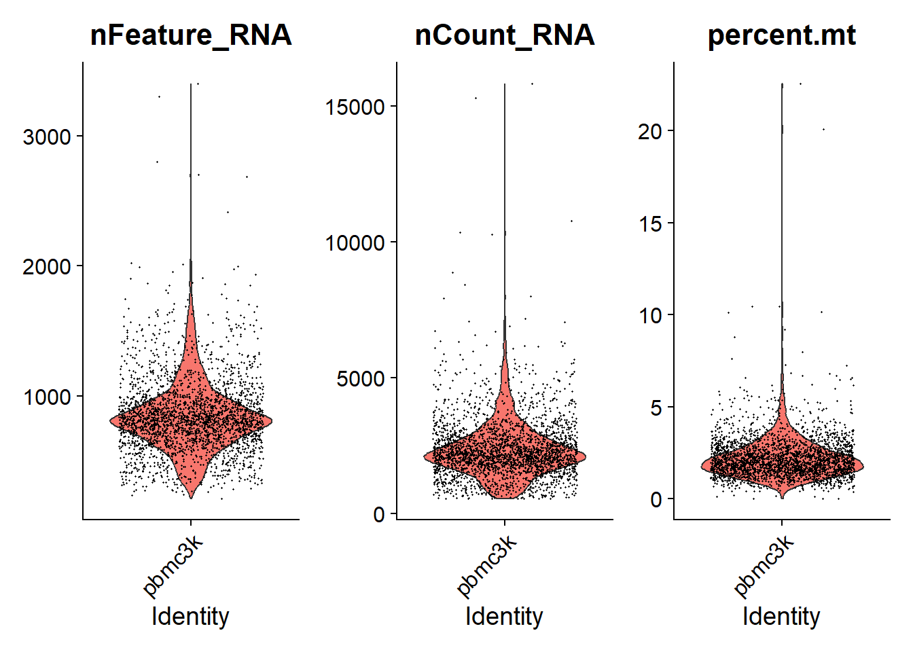
# FeatureScatter is typically used to visualize feature-feature relationships, but can be used
# for anything calculated by the object, i.e. columns in object metadata, PC scores etc.
plot1 <- FeatureScatter(pbmc, feature1 = "nCount_RNA", feature2 = "percent.mt", plot.cor = TRUE)
plot2 <- FeatureScatter(pbmc, feature1 = "nCount_RNA", feature2 = "nFeature_RNA", plot.cor = TRUE)
plot1 + plot2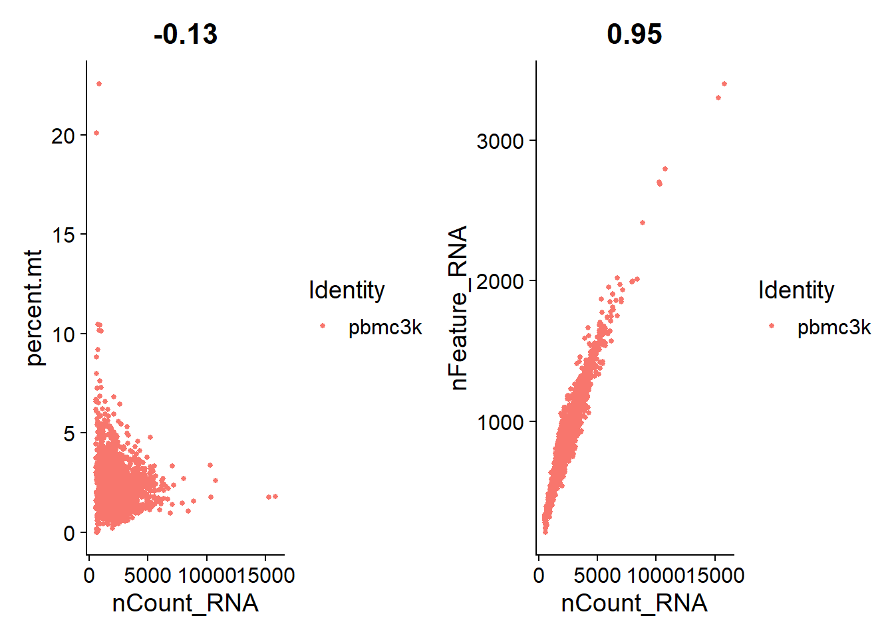
There are various ways of generating qualtity control metrics. The tutorial suggests filtering away feature counts over 2500 and under 200 and mitochondrial counts higher than 5%.
#selecting the subset of data wanted
subset_pbmc <- subset(pbmc, subset = nFeature_RNA > 200 & nFeature_RNA < 2500 & percent.mt < 5)
#normalizing the data as to make the numbers more human readable
norm_subset_pbmc <- NormalizeData(subset_pbmc)## Normalizing layer: counts## Finding variable features for layer counts# Identify the 10 most highly variable genes
top10 <- head(VariableFeatures(FVF_pbmc))
# plot variable features with and without labels
plot3 <- VariableFeaturePlot(FVF_pbmc)
plot4 <- LabelPoints(plot = plot3, points = top10, repel = TRUE)## When using repel, set xnudge and ynudge to 0 for optimal results## Warning in scale_x_log10(): log-10 transformation introduced
## infinite values.
## log-10 transformation introduced
## infinite values.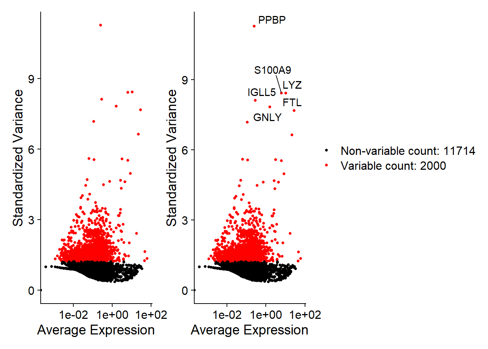
#retrieve all gene names
all.genes <- rownames(FVF_pbmc)
#Scales and centers features in the dataset.
scaled_FVF_pbmc <- ScaleData(FVF_pbmc, features = all.genes)## Centering and scaling data matrix#Run a PCA dimensionality reduction. For details about stored PCA calculation parameters
PCA_pbmc <- RunPCA(scaled_FVF_pbmc, features = VariableFeatures(object = scaled_FVF_pbmc))## PC_ 1
## Positive: CST3, TYROBP, LST1, AIF1, FTL, FTH1, LYZ, FCN1, S100A9, TYMP
## FCER1G, CFD, LGALS1, S100A8, CTSS, LGALS2, SERPINA1, IFITM3, SPI1, CFP
## PSAP, IFI30, SAT1, COTL1, S100A11, NPC2, GRN, LGALS3, GSTP1, PYCARD
## Negative: MALAT1, LTB, IL32, IL7R, CD2, B2M, ACAP1, CD27, STK17A, CTSW
## CD247, GIMAP5, AQP3, CCL5, SELL, TRAF3IP3, GZMA, MAL, CST7, ITM2A
## MYC, GIMAP7, HOPX, BEX2, LDLRAP1, GZMK, ETS1, ZAP70, TNFAIP8, RIC3
## PC_ 2
## Positive: CD79A, MS4A1, TCL1A, HLA-DQA1, HLA-DQB1, HLA-DRA, LINC00926, CD79B, HLA-DRB1, CD74
## HLA-DMA, HLA-DPB1, HLA-DQA2, CD37, HLA-DRB5, HLA-DMB, HLA-DPA1, FCRLA, HVCN1, LTB
## BLNK, P2RX5, IGLL5, IRF8, SWAP70, ARHGAP24, FCGR2B, SMIM14, PPP1R14A, C16orf74
## Negative: NKG7, PRF1, CST7, GZMB, GZMA, FGFBP2, CTSW, GNLY, B2M, SPON2
## CCL4, GZMH, FCGR3A, CCL5, CD247, XCL2, CLIC3, AKR1C3, SRGN, HOPX
## TTC38, APMAP, CTSC, S100A4, IGFBP7, ANXA1, ID2, IL32, XCL1, RHOC
## PC_ 3
## Positive: HLA-DQA1, CD79A, CD79B, HLA-DQB1, HLA-DPB1, HLA-DPA1, CD74, MS4A1, HLA-DRB1, HLA-DRA
## HLA-DRB5, HLA-DQA2, TCL1A, LINC00926, HLA-DMB, HLA-DMA, CD37, HVCN1, FCRLA, IRF8
## PLAC8, BLNK, MALAT1, SMIM14, PLD4, P2RX5, IGLL5, LAT2, SWAP70, FCGR2B
## Negative: PPBP, PF4, SDPR, SPARC, GNG11, NRGN, GP9, RGS18, TUBB1, CLU
## HIST1H2AC, AP001189.4, ITGA2B, CD9, TMEM40, PTCRA, CA2, ACRBP, MMD, TREML1
## NGFRAP1, F13A1, SEPT5, RUFY1, TSC22D1, MPP1, CMTM5, RP11-367G6.3, MYL9, GP1BA
## PC_ 4
## Positive: HLA-DQA1, CD79B, CD79A, MS4A1, HLA-DQB1, CD74, HIST1H2AC, HLA-DPB1, PF4, SDPR
## TCL1A, HLA-DRB1, HLA-DPA1, HLA-DQA2, PPBP, HLA-DRA, LINC00926, GNG11, SPARC, HLA-DRB5
## GP9, AP001189.4, CA2, PTCRA, CD9, NRGN, RGS18, CLU, TUBB1, GZMB
## Negative: VIM, IL7R, S100A6, IL32, S100A8, S100A4, GIMAP7, S100A10, S100A9, MAL
## AQP3, CD2, CD14, FYB, LGALS2, GIMAP4, ANXA1, CD27, FCN1, RBP7
## LYZ, S100A11, GIMAP5, MS4A6A, S100A12, FOLR3, TRABD2A, AIF1, IL8, IFI6
## PC_ 5
## Positive: GZMB, NKG7, S100A8, FGFBP2, GNLY, CCL4, CST7, PRF1, GZMA, SPON2
## GZMH, S100A9, LGALS2, CCL3, CTSW, XCL2, CD14, CLIC3, S100A12, RBP7
## CCL5, MS4A6A, GSTP1, FOLR3, IGFBP7, TYROBP, TTC38, AKR1C3, XCL1, HOPX
## Negative: LTB, IL7R, CKB, VIM, MS4A7, AQP3, CYTIP, RP11-290F20.3, SIGLEC10, HMOX1
## LILRB2, PTGES3, MAL, CD27, HN1, CD2, GDI2, CORO1B, ANXA5, TUBA1B
## FAM110A, ATP1A1, TRADD, PPA1, CCDC109B, ABRACL, CTD-2006K23.1, WARS, VMO1, FYB# Examine and visualize PCA results a few different ways
print(PCA_pbmc[["pca"]], dims = 1:5, nfeatures = 5)## PC_ 1
## Positive: CST3, TYROBP, LST1, AIF1, FTL
## Negative: MALAT1, LTB, IL32, IL7R, CD2
## PC_ 2
## Positive: CD79A, MS4A1, TCL1A, HLA-DQA1, HLA-DQB1
## Negative: NKG7, PRF1, CST7, GZMB, GZMA
## PC_ 3
## Positive: HLA-DQA1, CD79A, CD79B, HLA-DQB1, HLA-DPB1
## Negative: PPBP, PF4, SDPR, SPARC, GNG11
## PC_ 4
## Positive: HLA-DQA1, CD79B, CD79A, MS4A1, HLA-DQB1
## Negative: VIM, IL7R, S100A6, IL32, S100A8
## PC_ 5
## Positive: GZMB, NKG7, S100A8, FGFBP2, GNLY
## Negative: LTB, IL7R, CKB, VIM, MS4A7#Visualize the top genes and the first two principle components
VizDimLoadings(PCA_pbmc, dims = 1:2, reduction = "pca")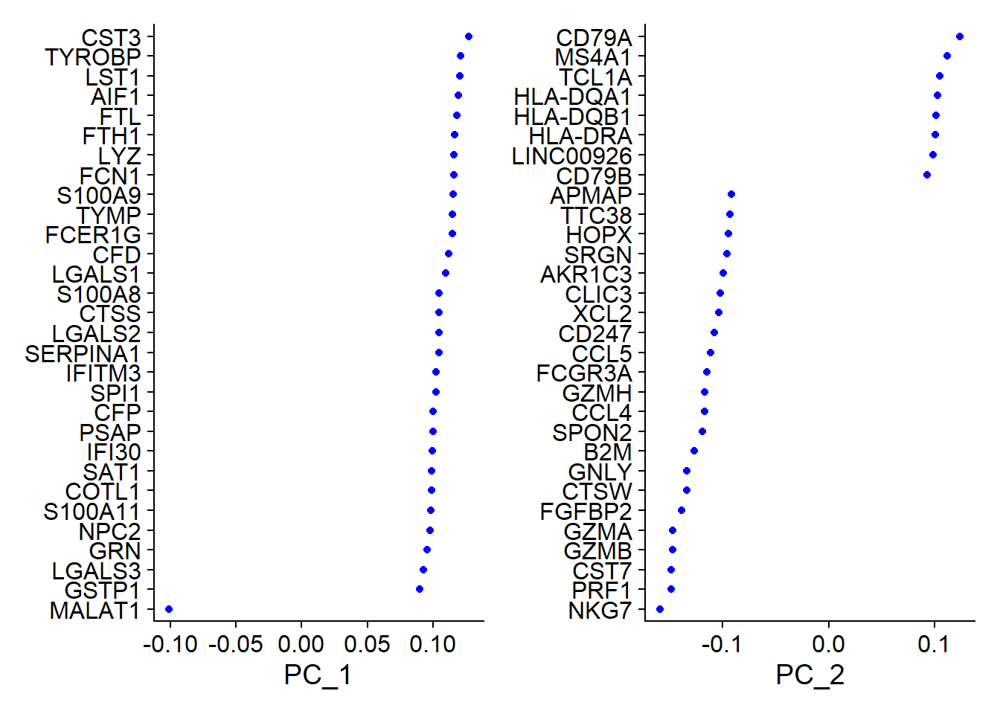
#A PCA plot depicting the each cell and where they get position measured against PC1 and PC2
DimPlot(PCA_pbmc, reduction = "pca") + NoLegend()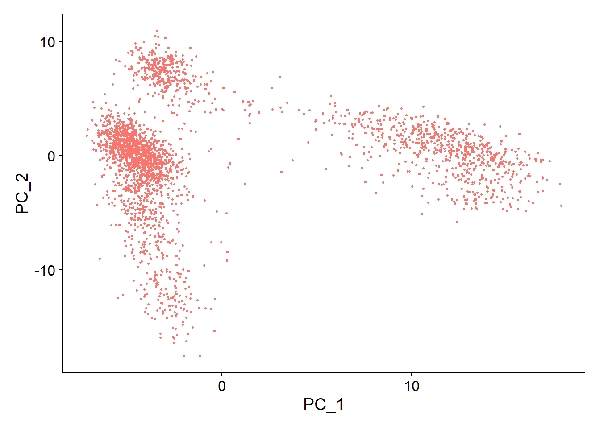
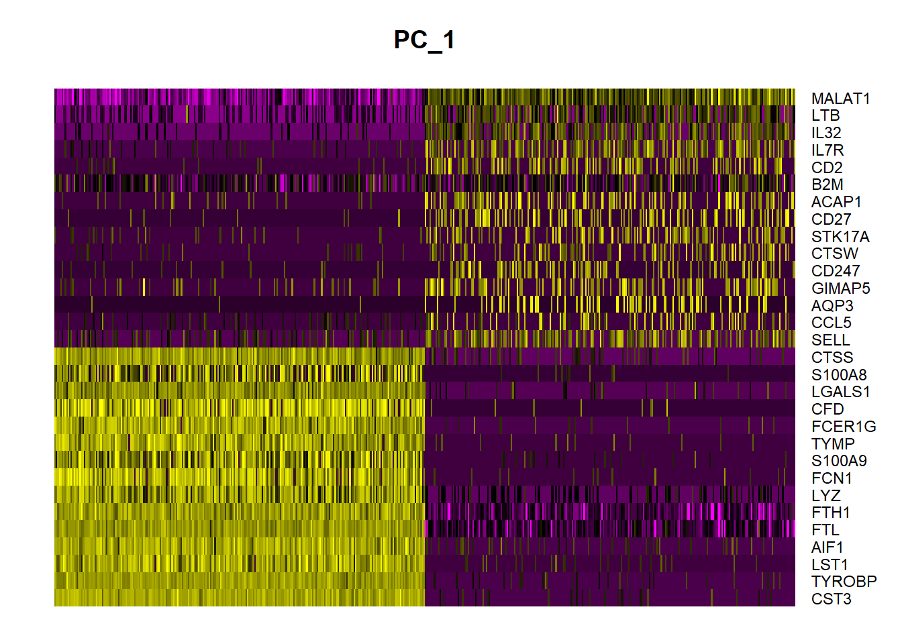
#By suggesting to the DimHeatmap function to look at PC1 through 15 it will try to fit 15 heatmaps based on the PC previously calculated in PCA_pbmc
DimHeatmap(PCA_pbmc, dims = 1:15, cells = 500, balanced = TRUE)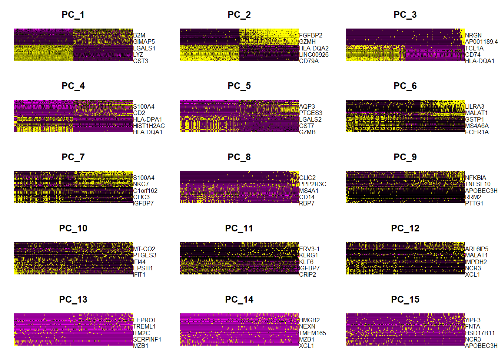 ## Dementionality
Determining the amount of PC that need to be used is important as to not have a overly computationally expensive. The more PC’s used has diminishing marginal results. This can be done visually by using ElbowPlot(). Alot of the deviation in the graphs can be explained in the first 10 of the principle coordinates. The differences produced in PC 10 - 20 are less distinctionable from background than the first 10.

## Computing nearest neighbor graph## Computing SNN## Modularity Optimizer version 1.3.0 by Ludo Waltman and Nees Jan van Eck
##
## Number of nodes: 2638
## Number of edges: 95927
##
## Running Louvain algorithm...
## Maximum modularity in 10 random starts: 0.8728
## Number of communities: 9
## Elapsed time: 0 seconds## 11:32:16 UMAP embedding parameters a = 0.9922 b = 1.112## 11:32:16 Read 2638 rows and found 10 numeric columns## 11:32:16 Using Annoy for neighbor search, n_neighbors = 30## 11:32:16 Building Annoy index with metric = cosine, n_trees = 50## 0% 10 20 30 40 50 60 70 80 90 100%## [----|----|----|----|----|----|----|----|----|----|## **************************************************|
## 11:32:17 Writing NN index file to temp file C:\Users\ffrij\AppData\Local\Temp\Rtmp4MRHuY\file3d10602c126f
## 11:32:17 Searching Annoy index using 1 thread, search_k = 3000
## 11:32:17 Annoy recall = 100%
## 11:32:18 Commencing smooth kNN distance calibration using 1 thread with target n_neighbors = 30
## 11:32:19 Initializing from normalized Laplacian + noise (using RSpectra)
## 11:32:19 Commencing optimization for 500 epochs, with 105140 positive edges
## 11:32:25 Optimization finished# note that you can set `label = TRUE` or use the LabelClusters function to help label
# individual clusters
DimPlot(rUMAP_pbmc, reduction = "umap")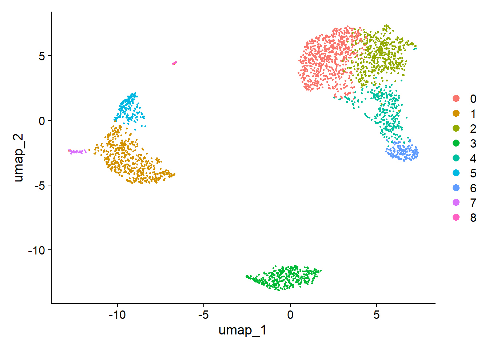
## p_val avg_log2FC pct.1 pct.2 p_val_adj
## IL32 2.892340e-90 1.3070772 0.947 0.465 3.966555e-86
## LTB 1.060121e-86 1.3312674 0.981 0.643 1.453850e-82
## CD3D 8.794641e-71 1.0597620 0.922 0.432 1.206097e-66
## IL7R 3.516098e-68 1.4377848 0.750 0.326 4.821977e-64
## LDHB 1.642480e-67 0.9911924 0.954 0.614 2.252497e-63# find all markers distinguishing cluster 5 from clusters 0 and 3
cluster5.markers <- FindMarkers(rUMAP_pbmc, ident.1 = 5, ident.2 = c(0, 3))
head(cluster5.markers, n = 5)## p_val avg_log2FC pct.1 pct.2 p_val_adj
## FCGR3A 8.246578e-205 6.794969 0.975 0.040 1.130936e-200
## IFITM3 1.677613e-195 6.192558 0.975 0.049 2.300678e-191
## CFD 2.401156e-193 6.015172 0.938 0.038 3.292945e-189
## CD68 2.900384e-191 5.530330 0.926 0.035 3.977587e-187
## RP11-290F20.3 2.513244e-186 6.297999 0.840 0.017 3.446663e-182## Calculating cluster 0## Calculating cluster 1## Calculating cluster 2## Calculating cluster 3## Calculating cluster 4## Calculating cluster 5## Calculating cluster 6## Calculating cluster 7## Calculating cluster 8## # A tibble: 7,019 × 7
## # Groups: cluster [9]
## p_val avg_log2FC pct.1 pct.2 p_val_adj cluster gene
## <dbl> <dbl> <dbl> <dbl> <dbl> <fct> <chr>
## 1 3.75e-112 1.21 0.912 0.592 5.14e-108 0 LDHB
## 2 9.57e- 88 2.40 0.447 0.108 1.31e- 83 0 CCR7
## 3 1.15e- 76 1.06 0.845 0.406 1.58e- 72 0 CD3D
## 4 1.12e- 54 1.04 0.731 0.4 1.54e- 50 0 CD3E
## 5 1.35e- 51 2.14 0.342 0.103 1.86e- 47 0 LEF1
## 6 1.94e- 47 1.20 0.629 0.359 2.66e- 43 0 NOSIP
## 7 2.81e- 44 1.53 0.443 0.185 3.85e- 40 0 PIK3IP1
## 8 6.27e- 43 1.99 0.33 0.112 8.60e- 39 0 PRKCQ-AS1
## 9 1.16e- 40 2.70 0.2 0.04 1.59e- 36 0 FHIT
## 10 1.34e- 34 1.96 0.268 0.087 1.84e- 30 0 MAL
## # ℹ 7,009 more rows# find markers for every cluster compared to all remaining cells, report only the positive ones
pbmc.markers <- FindAllMarkers(rUMAP_pbmc, only.pos = TRUE)## Calculating cluster 0## Calculating cluster 1## Calculating cluster 2## Calculating cluster 3## Calculating cluster 4## Calculating cluster 5## Calculating cluster 6## Calculating cluster 7## Calculating cluster 8## # A tibble: 7,019 × 7
## # Groups: cluster [9]
## p_val avg_log2FC pct.1 pct.2 p_val_adj cluster gene
## <dbl> <dbl> <dbl> <dbl> <dbl> <fct> <chr>
## 1 3.75e-112 1.21 0.912 0.592 5.14e-108 0 LDHB
## 2 9.57e- 88 2.40 0.447 0.108 1.31e- 83 0 CCR7
## 3 1.15e- 76 1.06 0.845 0.406 1.58e- 72 0 CD3D
## 4 1.12e- 54 1.04 0.731 0.4 1.54e- 50 0 CD3E
## 5 1.35e- 51 2.14 0.342 0.103 1.86e- 47 0 LEF1
## 6 1.94e- 47 1.20 0.629 0.359 2.66e- 43 0 NOSIP
## 7 2.81e- 44 1.53 0.443 0.185 3.85e- 40 0 PIK3IP1
## 8 6.27e- 43 1.99 0.33 0.112 8.60e- 39 0 PRKCQ-AS1
## 9 1.16e- 40 2.70 0.2 0.04 1.59e- 36 0 FHIT
## 10 1.34e- 34 1.96 0.268 0.087 1.84e- 30 0 MAL
## # ℹ 7,009 more rowscluster0.markers <- FindMarkers(rUMAP_pbmc, ident.1 = 0, logfc.threshold = 0.25, test.use = "roc", only.pos = TRUE)
VlnPlot(rUMAP_pbmc, features = c("MS4A1", "CD79A"))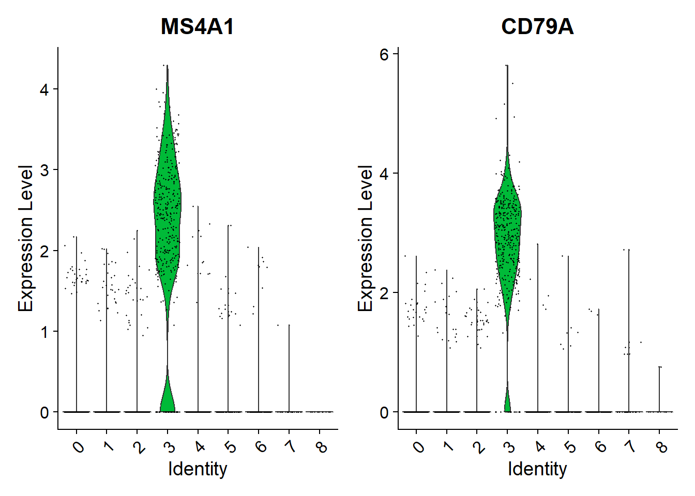
# you can plot raw counts as well
VlnPlot(rUMAP_pbmc, features = c("NKG7", "PF4"), slot = "counts", log = TRUE)## Warning: The `slot` argument of `VlnPlot()` is
## deprecated as of Seurat 5.0.0.
## ℹ Please use the `layer` argument
## instead.
## This warning is displayed once every 8
## hours.
## Call
## `lifecycle::last_lifecycle_warnings()`
## to see where this warning was generated.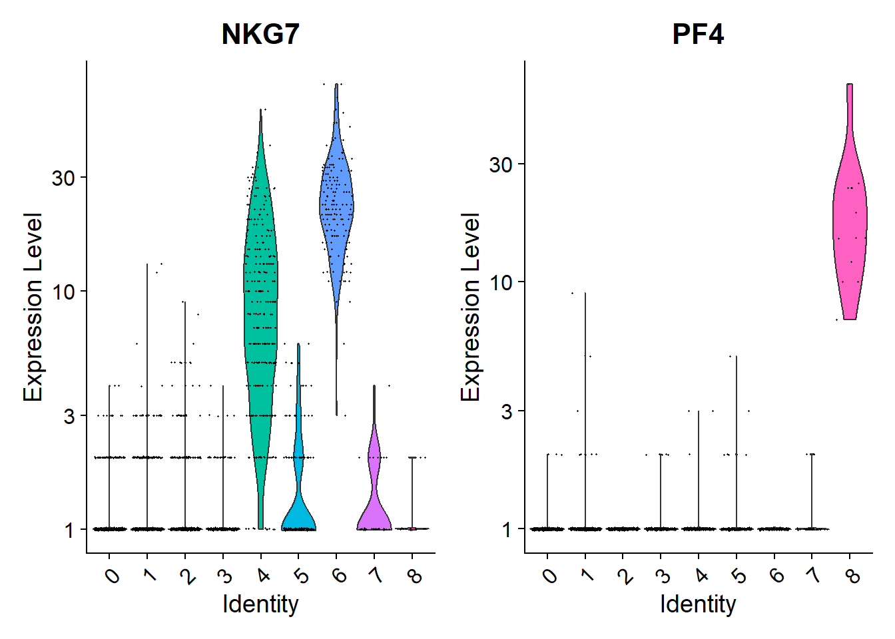
FeaturePlot(rUMAP_pbmc, features = c("MS4A1", "GNLY", "CD3E", "CD14", "FCER1A", "FCGR3A", "LYZ", "PPBP",
"CD8A"))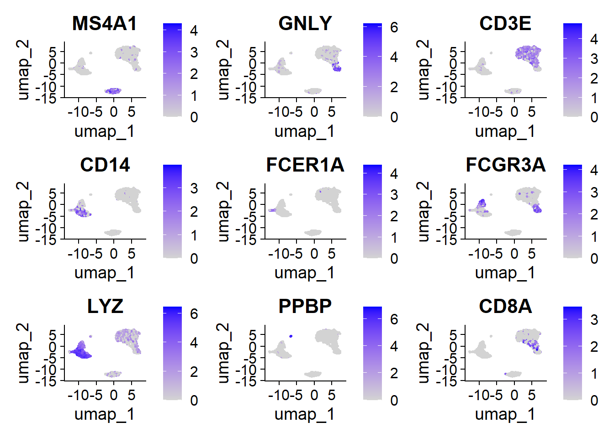
pbmc.markers %>%
group_by(cluster) %>%
dplyr::filter(avg_log2FC > 1) %>%
slice_head(n = 10) %>%
ungroup() -> top10
DoHeatmap(rUMAP_pbmc, features = top10$gene) + NoLegend()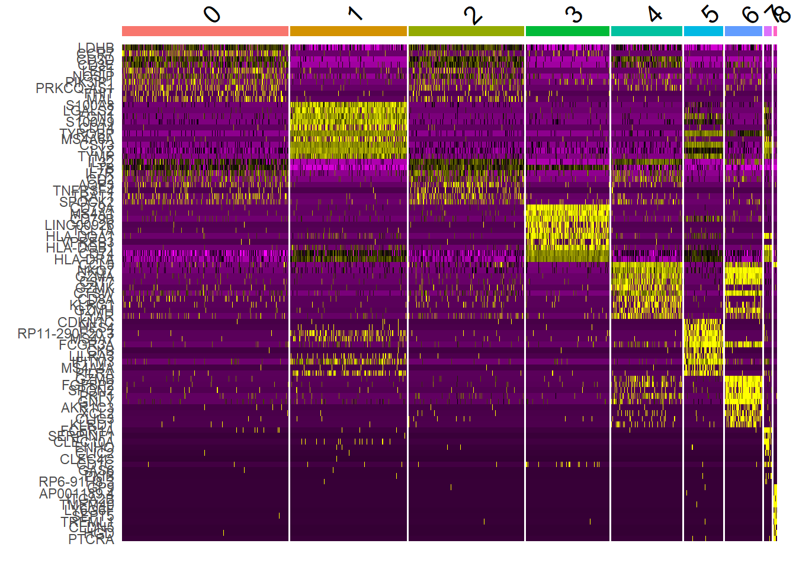
new.cluster.ids <- c("Naive CD4 T", "CD14+ Mono", "Memory CD4 T", "B", "CD8 T", "FCGR3A+ Mono",
"NK", "DC", "Platelet")
names(new.cluster.ids) <- levels(rUMAP_pbmc)
top10_genes_pbmc <- RenameIdents(rUMAP_pbmc, new.cluster.ids)
DimPlot(top10_genes_pbmc, reduction = "umap", label = TRUE, pt.size = 0.5) + NoLegend()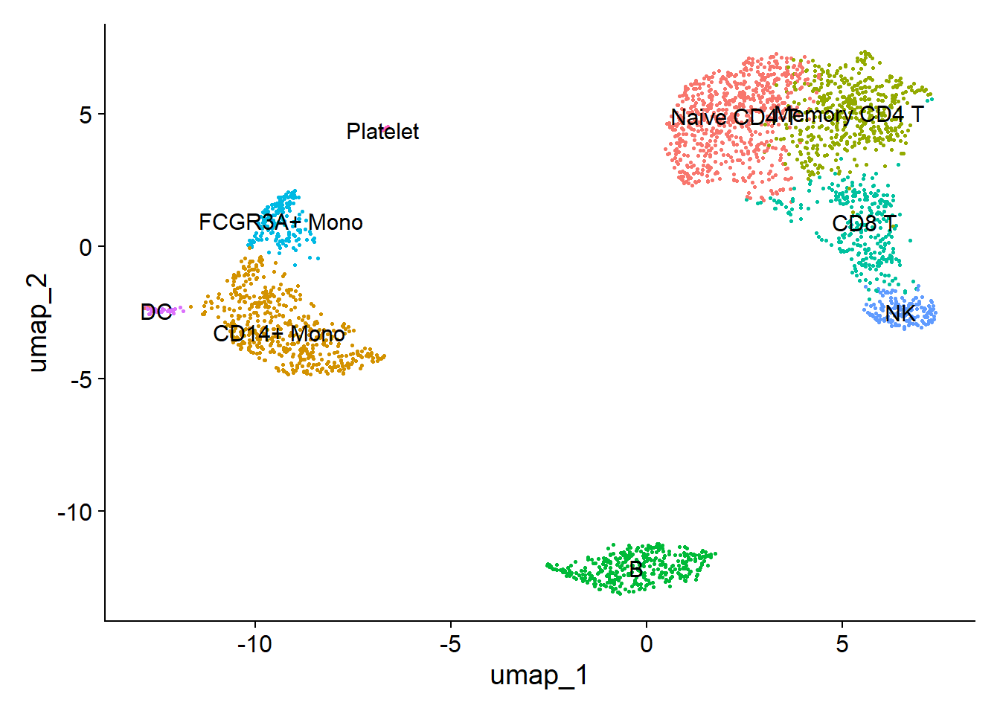